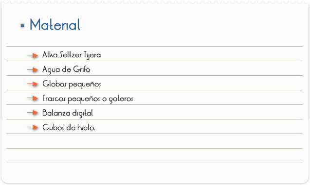
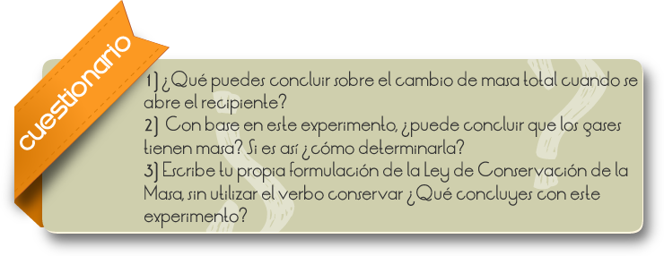

Introducción
Los dos conceptos masa y volumen, nos informan cuantitativamente de cuanto tenemos de algo. Podríamos decir que «tenemos 10cm3 de aluminio»o que«tenemos 27g. de aluminio», puesto que ambas frases nos informan cuanto aluminio hay. Pero masa y volumen no son la misma cosa. Sus definiciones operacionales son completamente diferentes. La definición de masa implica el uso de una balanza para comparar el objeto medido con objetos estándares. La definición de volumen implica meter cubos unitarios en el objeto medido. La masa de un objeto nos dice cuán pesado es el objeto; el volumen nos dice cuanto espacio ocupa. Como lo hemos visto, la masa se conserva en un sistema cerrado pero el volumen a veces no. Lo que acabamos de hacer es reemplazar un concepto, la cantidad de materia, por dos conceptos diferentes que se definen con precisión: masa y volumen.
El concepto de cantidad de materia es demasiado impreciso para ser útil en le ciencia. Debemos siempre especificar de qué estamos hablando, de su masa o su volumen. La frase «tenemos la misma cantidad de agua y de mercurio», no tiene sentido. Podríamos tener el mismo volumen de agua y de mercurio, pero entonces el mercurio sería más pesado. Podríamos tener la misma masa de agua y de mercurio, pero entonces el agua llenaría un recipiente más grande que el mercurio.
Objetivo
En este experimento explorarás lo que pasa con la masa total del sistema cuando un comprimido se disuelve por completo en agua.

Antes de empezar considere un experimento en el que se disuelve un comprimido efervescente (por ejemplo, un Alka Seltzer) en agua. Supongamos que inmediatamente después de haber puesto el comprimido en el agua, se cubre el recipiente con un globo que sirve de tapa hermética.
El comprimido se disuelve y el globo se infla.
Considera el sistema formado por todo lo que se encuentra en el interior del recipiente y del globo.
1. Cuando el comprimido se disuelve, ¿qué pasa con el volumen del sistema?
2. ¿Aumenta, disminuye o se mantiene igual? Explica tu razonamiento.
3. Cuando el comprimido se disuelve, qué pasa con la masa del sistema: ¿Aumenta, disminuye o se mantiene igual? Explica tu razonamiento.
4. Cuando el comprimido se disuelve, que pasa con el volumen del sistema: ¿Aumenta, disminuye o se mantiene igual? Explica tu razonamiento.
¡ATENCIÓN! Protege tus ojos en este experimento.
1. Toma un recipiente con tapón hermético y un comprimido efervescente.
2. Llena el recipiente con agua a un tercio de su capacidad pero no metas aún el comprimido
3. Pon el recipiente, tapón y comprimido en la balanza y mide la masa total del sistema.
¡ATENCIÓN! Dependiendo del recipiente y del tapón quizás debas usar solo una fracción del comprimido para evitar una explosión.
La siguiente etapa debe ser efectuada rápida y correctamente.
1. Pon el comprimido en el recipiente y ciérralo inmediatamente con el tapón. Hay que asegurarse que el recipiente está herméticamente cerrado.
2. Espera que el comprimido se disuelva por completo.
3. Coloca entonces el sistema en la balanza y mida otra vez su masa. ¿Qué puedes concluir sobre el cambio de masa total cuando se disuelve el comprimido? Explica tu razonamiento.
4. Ahora abre con cuidado el recipiente. ¿Qué le indica el sonido que escucha cuando quita el tapón?
5. Cuando ya no se escuche nada, mida otra vez la masa del sistema.
EXPERIMENTO CON HIELO:
Se coloca un trozo de hielo dentro del frasco pequeño del experimento anterior y lo pesamos de manera inmediata, esperamos que se transforme a líquido
1. Se vuelve a pesar con poca exactitud.
2. ¿Qué sucede se conserva el peso, la masa, el volumen?

RESULTADOS Y CONCLUSIONES
Al colocar el comprimido dentro del depósito y disolverse se generan gases que provocan el aumento en la cantidad de la masa.
Al abrir el recipiente sale el gas y al volver a pesar, disminuye la masa, puesto que el gas ya se liberó.